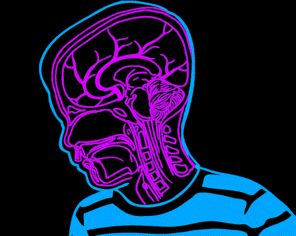

Concepto e importancia de la organización
Concepto
Proviene de "Organon" que significa instrumento u organismo, esto implica partes y funciones diversas, ningun organismo las tiene iguales ni da igual funcionamiento.
Todas las partes trabajan como un todo y tienen un fin comun (unidad funcional) y para lograr este fin, cada una propone una accion distinta que se complementa con las demas y tabajan por el fin comun.

Definición
Es el arreglo de las funciones que se estiman necesarias para lograr un objetivo, y una indicación de la autoridad y la responsabilidad asignada a las personas que tienen a su cargo la ejecución de las funciones respectivas.
El proceso de combinar el trabajo que los individuos o grupos deban efectuar, con los elementos necesarios para su ejecución, de tal manera que las labores que si se ejecuten, sean los mejores medios para la aplicación eficiente, sistemática, positiva y coordinada de los esfuerzos disponibles.
Es un método de distribución de la autoridad y de la responsabilidad, y sirve para establecer canales prácticos de comunicación entre los grupos.
Importancia

La organización, por ser el elemento final del aspecto teórico, recoge, complementa y lleva hasta sus últimos detalles todo lo que la planeación ha señalado respecto a como debe ser una empresa.
Tan grande es la importancia de la organización, que en algunas ocasiones ha hecho perder de vista a muchos autores que no es sino una parte de la administración, dando lugar a que la contrapongan a ésta última, como si la primera representara lo teórico y científico, y la segunda lo práctico y empírico.
Es el primer paso práctico de la etapa dinámica y, por lo mismo, de ella depende en gran parte que la teoría formulada en la etapa constructiva o estática, tenga la eficiencia prevista y planeada.
Fin